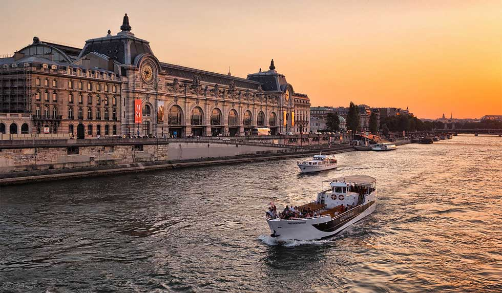
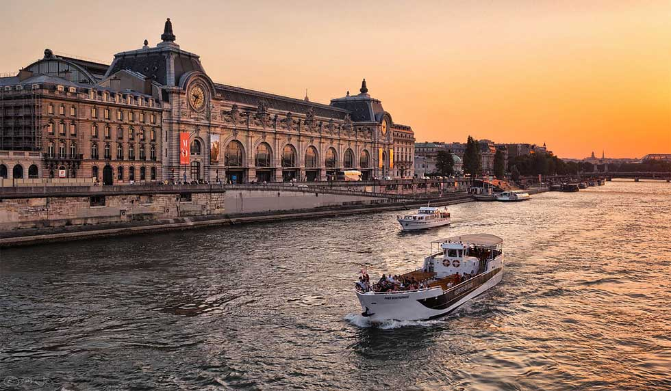

Pontos de interesse
Paris, a capital da França, é conhecida como a "Cidade Luz" por sua importância cultural e intelectual, além de sua bela iluminação noturna. É uma das cidades mais visitadas do mundo e é famosa por sua arquitetura impressionante, arte, história e gastronomia.
Top 5 Restaurantes
- Septime
- L'Oiseau Blanc
- Le Meurice Alain Ducasse
- Arpège
- Restaurant Passerini
Top 5 Monumentos
- Eiffel Tower (Tour Eiffel)
- Notre-Dame Cathedral
- Arc de Triomphe
- Louvre Museum (Musée du Louvre)
- Sacré-Cœur Basilica
Locais a não perder
- Eiffel Tower (Tour Eiffel)
- Notre-Dame Cathedral
- Arc de Triomphe
- Louvre Museum (Musée du Louvre)
- Sacré-Cœur Basilica
Melhor Local para tirar uma foto
Melhor altura para visitar
| Mês | Clima | Multidão de Turistas | Eventos/Festivais |
|---|---|---|---|
| Março - Maio | Agradável (10-17°C) | Moderada | Maratona de Paris, Celebrações de Páscoa |
| Junho - Agosto | Quente (17-25°C) | Alta (Temporada Alta) | Dia da Bastilha, Paris Plages |
| Setembro - Outubro | Agradável (13-21°C) | Moderada | Semana de Moda de Paris, Fête d'Automne |
| Novembro - Fevereiro | Frio (3-8°C) | Baixa | Mercados de Natal, Réveillon |